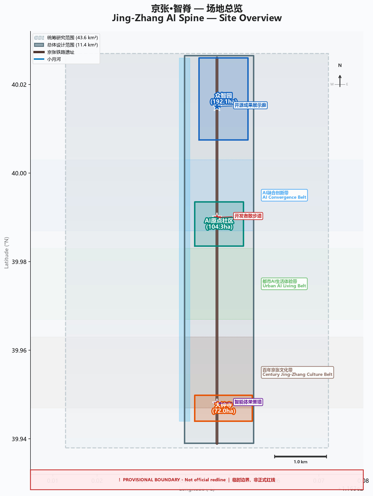
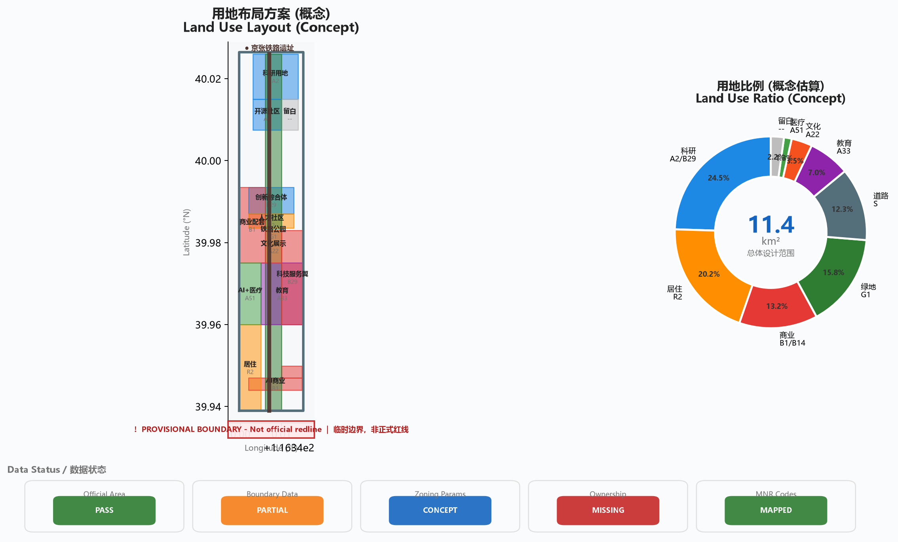
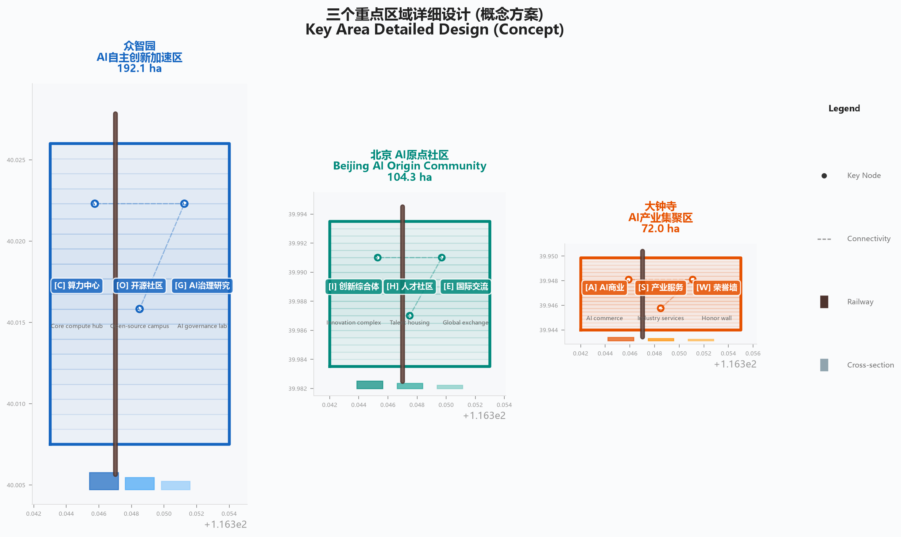
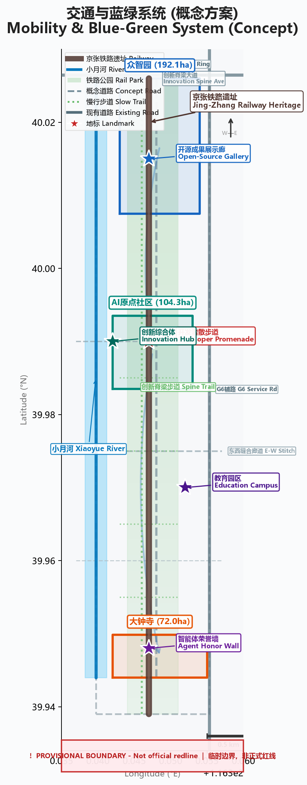
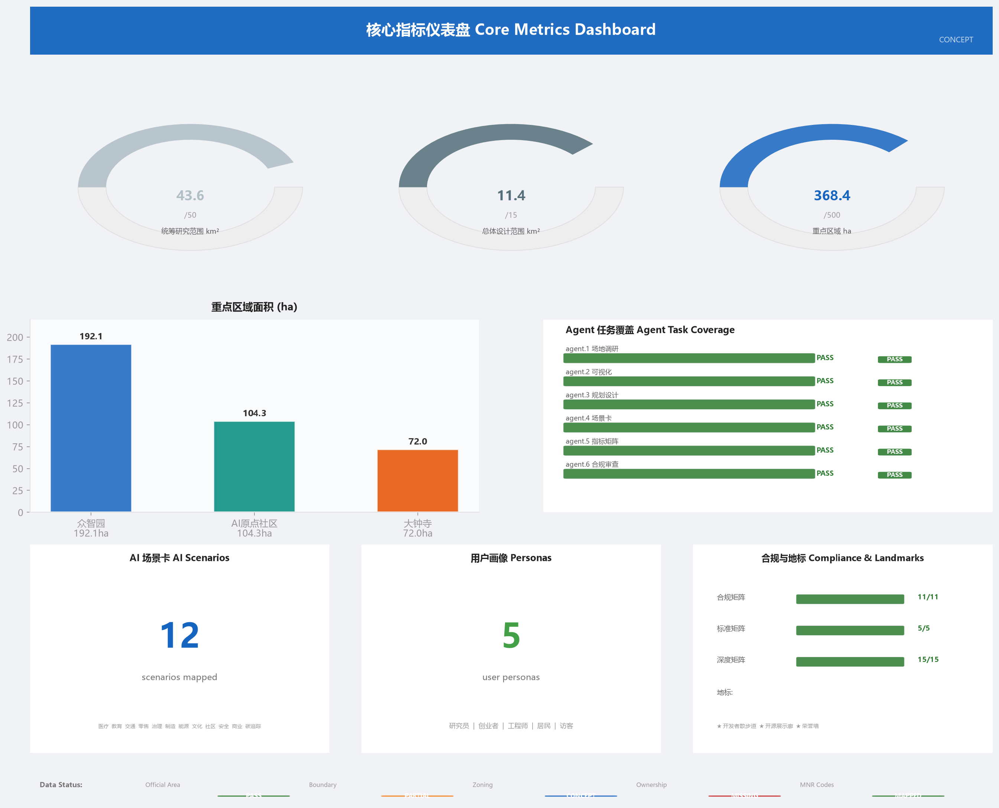

京张·智脊
一、设计依据与资料清单
本方案依据以下公开或已清权资料构建：
| 来源 | 权威等级 | 可用于正式方案 |
|---|---|---|
| 百年京张AI创新带城市设计国际方案征集资格预审公告 | A0 | 是 |
| 面向全球智能体任务书摘录 | CLEARED | 是 |
| 城市设计管理办法（住建部） | A0 | 是 |
| 城市、镇控制性详细规划编制审批办法 | A0 | 是 |
| 国土空间用地用海分类指南 | A0 | 是 |
| Provisional 粗略边界 | PROVISIONAL | 仅自检与可视化 |
数据缺口：官方精确边界（密码保护）、控规参数（容积率/建筑高度等）、土地权属信息均缺失。
二、三层范围工作框架
2.1 统筹研究范围
面积: 43.6 km² | 边界: 北至北五环路，东至京藏高速，南至西直门外大街，西至万泉河路
2.2 总体设计范围
面积: 11.4 km² | 以京张遗址公园周边1-2公里为范围
2.3 重点区域范围
面积: 368.4 ha | 三个重点区域：
- 众智园 AI 自主创新加速区: 192.1 ha
- 北京 AI 原点社区: 104.3 ha
- 大钟寺 AI 产业集聚区: 72.0 ha
2.4 三区两翼协同结构
| 空间单元 | 定位 | 核心功能 |
|---|---|---|
| AI 原点社区 | 世界级 AI 创新生态 | 基础研究、创业孵化、国际交流 |
| 众智园 | AI 全栈自主体系 | 算力中心、大模型训练、开源社区 |
| 大钟寺 | 智能原生新业态 | AI+商业、消费场景、产业服务 |
| 中关村服务翼 | 要素全球化配置 | IP赋能、资本对接、技术转移 |
| 小月河赋能翼 | AI 场景赋能 | 场景试验、公共体验、生活服务 |

三、统筹研究范围产业与未来城市研究
3.1 总体概念与命名体系
主名称: 京张·智脊 | 英文: Jing-Zhang AI Spine | 缩写: JZAS
命名逻辑: "京张"指向百年铁路，"智"指向AI时代，"脊"串联三个时代——铁路脊梁→创新脊梁→文化脊梁。
视觉识别方向
以京张铁路"人字形"线形叠加神经网络节点，色彩体系: 铁锈红(#8B4513)+科技蓝(#0066CC)+创新金(#FFD700)。
3.2 全球AI创新生态案例
| # | 案例 | 城市 | 可借鉴要素 |
|---|---|---|---|
| 1 | 硅谷 AI 生态圈 | 旧金山 | 大学-资本-创业正反馈 |
| 2 | 深圳湾科技生态园 | 深圳 | 产业链整合 |
| 3 | 特拉维夫创新区 | 特拉维夫 | 军转民+国际化 |
| 4 | 伦敦硅环 | 伦敦 | 工业遗产转型 |
| 5 | 首尔数字媒体城 | 首尔 | 文化科技融合 |
| 6 | 班加罗尔电子城 | 班加罗尔 | 人才与产业集聚 |
| 7 | 新加坡纬壹科技城 | 新加坡 | 顶层设计+国际人才 |
| 8 | 东京涩谷创新区 | 东京 | 科技与都市文化共生 |
四、总体设计范围城市更新与控规深度城市设计
构建"一轴两带三核多组团"的用地结构。用地以科研教育为主(24.5%)，居住(20.2%)、绿地(15.8%)、商业(13.2%)为辅。

拆改留逻辑（概念）: 留~40%（高校/文保/新建建筑）、改~35%（老旧厂房/办公楼）、拆~15%（危房/不匹配建筑）、新建~10%（算力中心/综合体/地标）。
控规参数: 容积率、建筑高度、建筑密度、绿地率均待确认。
五、重点区域详细设计
5.1 众智园 AI自主创新加速区 (192.1 ha)
定位: AI全栈自主体系与AI治理话语权。"一轴两廊三片区"结构: 算力核心区+开源社区片+AI治理研究片。
5.2 北京 AI原点社区 (104.3 ha)
定位: 世界级AI创新生态。"核心-圈层-链接"结构: AI创新综合体+人才社区+连接高校的创新走廊。
5.3 大钟寺 AI产业集聚区 (72.0 ha)
定位: 智能原生新业态试验场。"双核联动": 商业核心(AI+消费)+产业核心(企业服务)。

六、AI创新生态、人才画像与AI+场景
6.1 AI场景卡 (12张)
| # | 场景 | 类别 | 测试验证 |
|---|---|---|---|
| 1 | AI分诊与远程诊疗 | 医疗 | ✅ |
| 2 | AI个性化学习伴侣 | 教育 | |
| 3 | 自动驾驶微循环接驳 | 交通 | ✅ |
| 4 | AI智能零售体验 | 零售 | |
| 5 | 智能工厂数字孪生 | 制造 | ✅ |
| 6 | AI城市安全监测 | 治理 | |
| 7 | 分布式能源智能调度 | 能源 | |
| 8 | AI文化遗产数字导览 | 文化 | |
| 9 | AI社区健康管理 | 医疗 | |
| 10 | AI创业导师匹配 | 教育 | |
| 11 | AI公共空间智能管理 | 治理 | |
| 12 | AI碳足迹追踪与优化 | 能源 |
6.2 用户画像 (5类)
AI研究员(25-40) | AI创业者(22-35) | AI工程师(25-45) | 周边居民(全年龄) | 国际访客(全年龄)
七、用地、建筑规模与拆改留方案
用地面积从 geometry/land_use.geojson 投影至 EPSG:4548 后计算。建筑规模（容积率/建筑高度等）待控规确认。
八、交通、轨道、市政与公共服务设施
构建"轨道交通为骨架、慢行系统为脉络、智能交通为特色"的综合交通体系。
创新脊梁步道: 沿铁路遗址公园全长贯通的步行+骑行综合慢行道。
新型基础设施: 边缘计算节点、5G/6G、智能灯杆、分布式能源站、充电网络。

九、蓝绿空间、公共空间与城市风貌
9.1 蓝绿系统
"一轴两翼多节点": 铁路遗址公园绿带(主轴) + 小月河绿廊(西翼) + 学院路绿廊(东翼)
9.2 AI朝圣地标
- 开发者散步道: 开源贡献者纪念砖铺设的线性散步道
- 开源成果展示廊: 以铁路里程碑为原型的AI开源里程碑展示
- 智能体贡献荣誉墙: 为参与城市建设的AI Agent设立的弧形纪念墙
十、更新项目清单、实施政策与分期计划
一期(2026-2028): 铁路公园贯通、三个地标建设、算力中心投用
二期(2028-2030): 慢行系统贯通、人才社区入住、商业试验场运营
三期(2030-2032): 国际交流中心建成、能源系统优化、品牌成熟
年度活动体系
京张AI创新周(万人级) | AI开发者大会(千人级) | AI马拉松(季度) | Agent评选(年度) | AI朝圣日(年度)
十一、指标体系、面积复算与合规矩阵

合规矩阵: 11项全覆盖 | 标准矩阵: 5项全覆盖 | 设计深度: 15项全complete
十二、风险、版权与合规说明
数据精度风险(中) | 控规缺失风险(高) | 实施可行性(中) | 版权风险(低) | 隐私风险(低)
详细版权说明见 report/copyright_statement.md
十三、参考资料
- 北京市规划和自然资源委员会海淀分局. 资格预审公告. 2026.
- 住房和城乡建设部. 城市设计管理办法. 2017.
- 住房和城乡建设部. 控制性详细规划编制审批办法. 2010.
- 自然资源部. 用地用海分类指南. 2023.
- OpenStreetMap contributors. ODbL License.